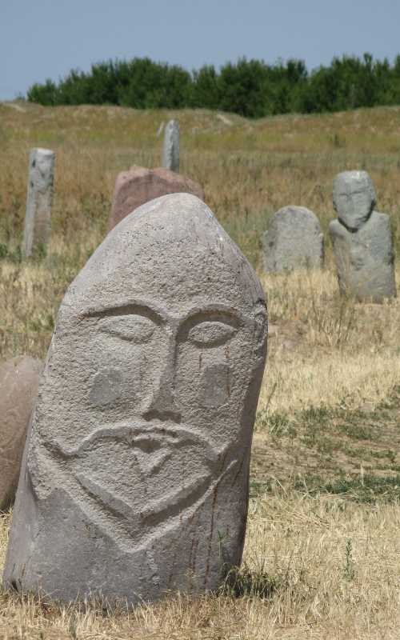
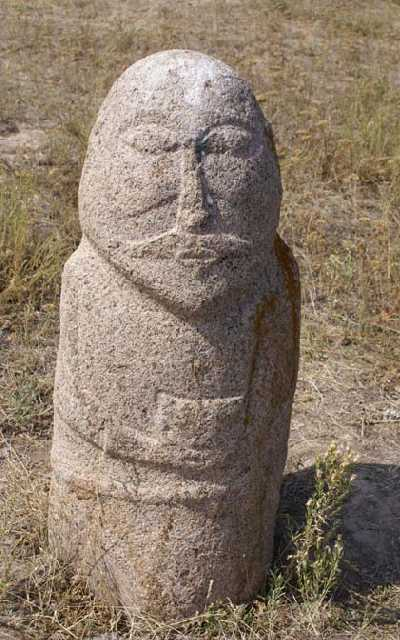
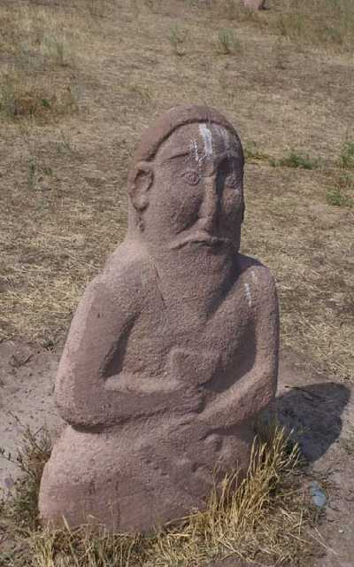
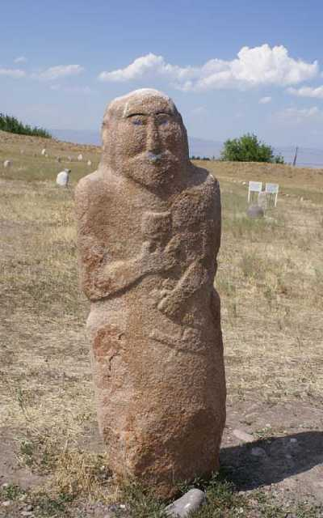
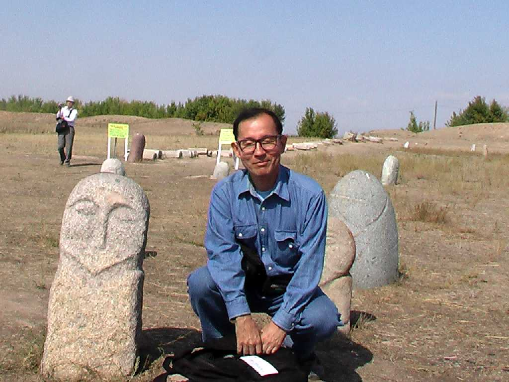
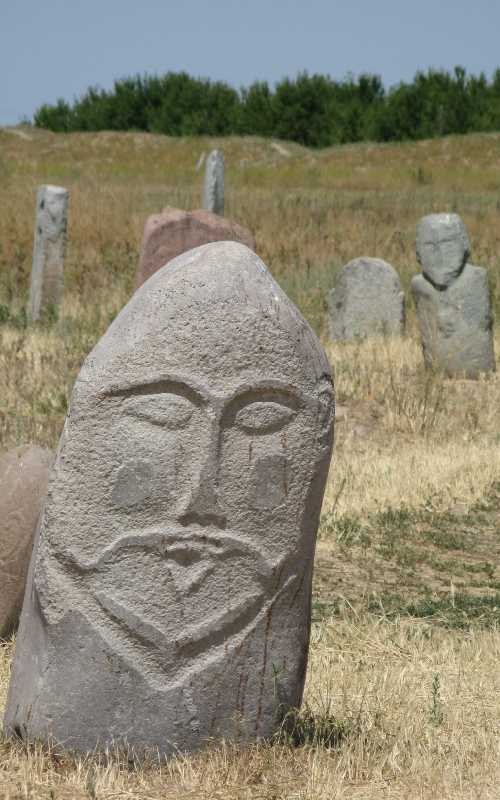
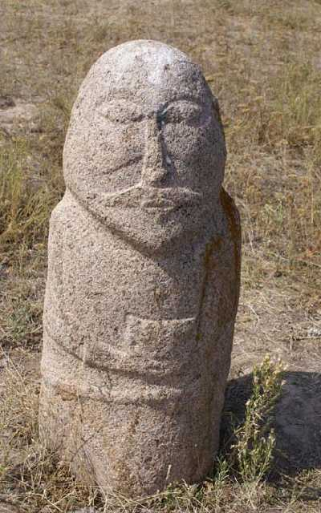
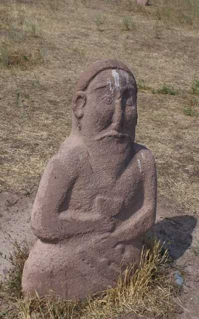
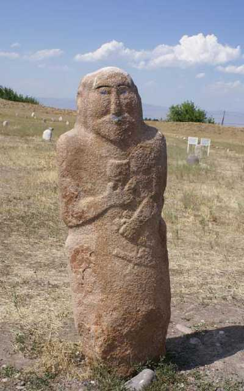
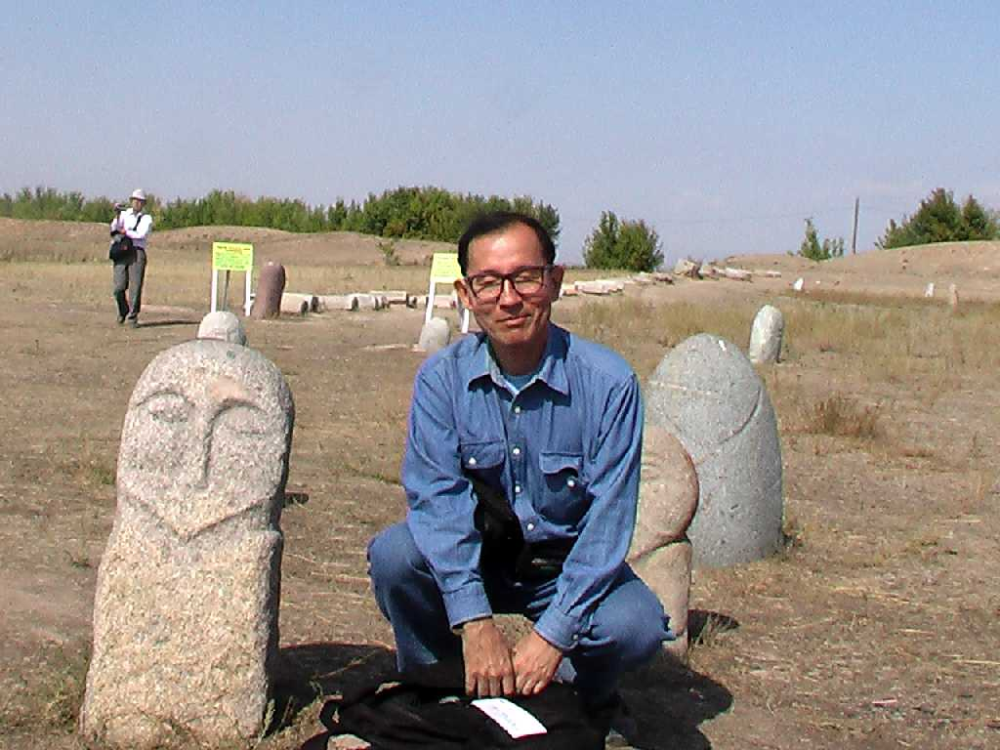

Burana Tower Balasagun ９世紀にカラハン朝の中核都市として建設された ブラナの塔は１１世紀に創られた高さ２４ｍのミナレットである 石人は６～１２世紀に創られたもので近隣から出土したものを展示している  Balbal  September 20 2008 Balasagun
９世紀にカラハン朝の中核都市として建設された ブラナの塔は１１世紀に創られた高さ２４ｍのミナレットである 石人は６～１２世紀に創られたもので近隣から出土したものを展示している

Balbal

September 20 2008 Balasagun